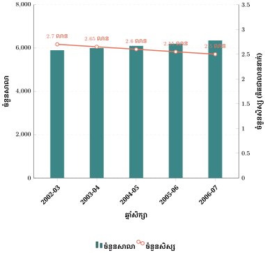
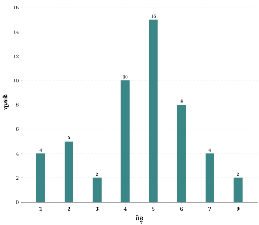
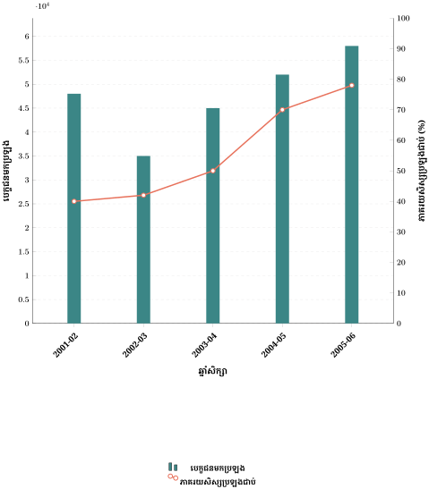
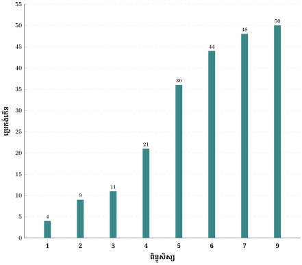
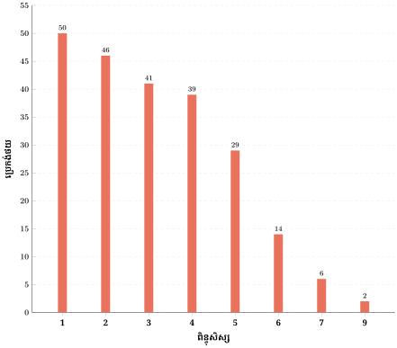
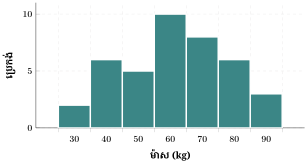
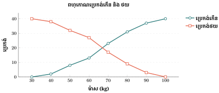
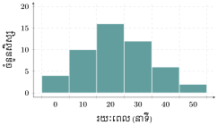
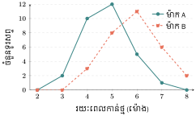
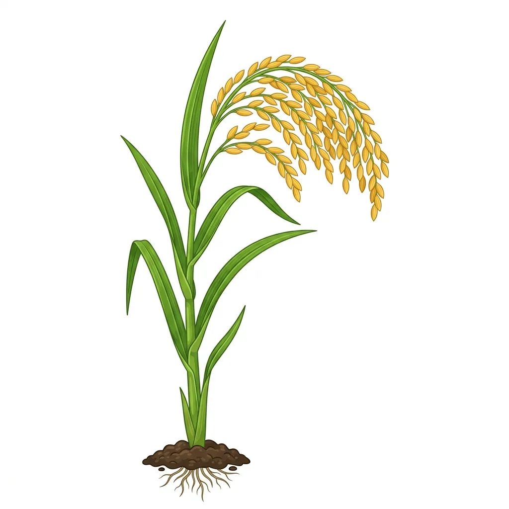

- យល់ដឹងពីរបៀបប្រមូលផ្ដុំទិន្នន័យជាប្រេកង់។
- ចេះរៀបចំទិន្នន័យជាប្រេកង់កើននិងប្រេកង់ថយ។
- ចេះផ្ដុំទិន្នន័យដែលនៅប៉ាត់សំប៉ាយច្រើនទៅជាថ្នាក់ (Intervals)។
- ចេះបកស្រាយទិន្នន័យជាក្រាបសសរ ក្រាបអ៊ីស្តូក្រាម និងក្រាបពហុកោណប្រេកង់។

រំលឹកចំណេះដឹង សួស្ដីប្អូនៗ! ធ្លាប់ឆ្ងល់ទេថា គេធ្វើម៉េចទើបដឹងថា សិស្សភាគច្រើនក្នុងថ្នាក់ចូលចិត្តមុខវិជ្ជាអ្វីជាងគេ ឬមានកម្ពស់ប៉ុន្មាន? នៅក្នុងជីវិតប្រចាំថ្ងៃ យើងតែងតែជួបប្រទះនូវចំនួនលេខច្រើនសន្ធឹកសន្ធាប់។ បើលេខទាំងនោះនៅរាយប៉ាយ យើងពិបាកមើលយល់ណាស់។ ថ្ងៃនេះ លោកគ្រូនឹងនាំប្អូនៗទៅរៀនពីរបៀប «ចងក្រង» លេខទាំងនោះឱ្យមានសណ្តាប់ធ្នាប់ ងាយស្រួលមើលយល់ភ្លាមៗ តាមរយៈការធ្វើបំណែងចែកប្រេកង់ និងការគូរក្រាប! តោះ! យើងទៅមើលទាំងអស់គ្នា!
\(\displaystyle 1\). ការផ្ដុំទិន្នន័យជាប្រេកង់
ងាយយល់ ជារៀងរាល់ឆ្នាំ គេតែងតែស្រង់ចំនួនសាលាបឋមសិក្សាដែលបានពង្រីកទៅតាមជនបទនៃទូទាំងប្រទេស ដើម្បីឆ្លើយតបទៅនឹងតម្រូវការនិងធានាឱ្យការចូលរៀនប្រកបដោយសមធម៌ ។ ចំនួនសាលានិងចំនួនសិស្សតែងតែប្រែប្រួលទៅតាមឆ្នាំសិក្សានីមួយៗ។ ដើម្បីងាយយល់ គេនិយមបកស្រាយវាជាក្រាប។

តាមរយៈក្រាបនេះ យើងសង្កេតឃើញថា៖ ចំនួនសាលាបានកើនឡើងប្រមាណពី \(\displaystyle 5~900\) រហូតដល់ជិត \(\displaystyle 6~400\) សាលារៀន (សសរពណ៌បៃតង) តែចំនួនសិស្សបែរជាថយចុះបន្តិចម្ដងៗ គឺពីប្រមាណ \(\displaystyle 2.7\) លានមក \(\displaystyle 2.5\) លាននាក់ (ខ្សែពណ៌ទឹកក្រូច)។
ពាក្យពេចន៍ពីគ្រូ (តើអ្វីទៅជាប្រេកង់?):
ប្អូនៗគ្រាន់តែចាំថា ប្រេកង់ គឺគ្រាន់តែជា "ចំនួនដង" ប៉ុណ្ណោះ។ ឧទាហរណ៍ បើមានសិស្ស \(\displaystyle 5\) នាក់បានពិន្ទុ \(\displaystyle 10\) នោះប្រេកង់នៃពិន្ទុ \(\displaystyle 10\) គឺស្មើនឹង \(\displaystyle 5\)! រីឯ ប្រេកង់ធៀបជាភាគរយ គឺប្រាប់យើងពីទំហំធៀបនឹងរយ ដើម្បីឱ្យយើងងាយស្រួលដឹងថា វាស្មើនឹងប៉ុន្មានភាគរយនៃចំនួនសរុប។
ឧទាហរណ៍ទី\(\displaystyle 1\) ខាងក្រោមនេះជាលទ្ធផលពិន្ទុរបស់សិស្សនៃថ្នាក់រៀនមួយដែលមានសិស្ស \(\displaystyle 50\) នាក់។
| \(\displaystyle 4\) | \(\displaystyle 4\) | \(\displaystyle 5\) | \(\displaystyle 4\) | \(\displaystyle 1\) | \(\displaystyle 6\) | \(\displaystyle 5\) | \(\displaystyle 6\) | \(\displaystyle 6\) | \(\displaystyle 5\) |
| \(\displaystyle 5\) | \(\displaystyle 4\) | \(\displaystyle 5\) | \(\displaystyle 4\) | \(\displaystyle 9\) | \(\displaystyle 2\) | \(\displaystyle 7\) | \(\displaystyle 5\) | \(\displaystyle 7\) | \(\displaystyle 2\) |
| \(\displaystyle 5\) | \(\displaystyle 2\) | \(\displaystyle 6\) | \(\displaystyle 3\) | \(\displaystyle 7\) | \(\displaystyle 3\) | \(\displaystyle 5\) | \(\displaystyle 1\) | \(\displaystyle 5\) | \(\displaystyle 6\) |
| \(\displaystyle 4\) | \(\displaystyle 5\) | \(\displaystyle 1\) | \(\displaystyle 5\) | \(\displaystyle 5\) | \(\displaystyle 6\) | \(\displaystyle 1\) | \(\displaystyle 6\) | \(\displaystyle 2\) | \(\displaystyle 5\) |
| \(\displaystyle 5\) | \(\displaystyle 2\) | \(\displaystyle 9\) | \(\displaystyle 4\) | \(\displaystyle 6\) | \(\displaystyle 7\) | \(\displaystyle 4\) | \(\displaystyle 4\) | \(\displaystyle 4\) | \(\displaystyle 5\) |
គិតមុនគូ ពិន្ទុនីមួយៗឋិតនៅប៉ាត់សំប៉ាយពីគ្នា ក្នុងករណីនេះគេផ្ដុំវាទៅតាមចំនួនដងរបស់វាហៅថាប្រេកង់។ លើសពីនេះ គេក៏ត្រូវធៀបប្រេកង់ទៅនឹងប្រេកង់សរុបដើម្បីគិតជាភាគរយហៅថាប្រេកង់ធៀប។
ជំហានដោះស្រាយ
| ពិន្ទុ \(\displaystyle x\) | ប្រេកង់ \(\displaystyle f\) | ប្រេកង់ធៀបជា \(\displaystyle \%\) |
| \(\displaystyle 1\) | \(\displaystyle 4\) | \(\displaystyle 8\%\) |
| \(\displaystyle 2\) | \(\displaystyle 5\) | \(\displaystyle 10\%\) |
| \(\displaystyle 3\) | \(\displaystyle 2\) | \(\displaystyle 4\%\) |
| \(\displaystyle 4\) | \(\displaystyle 10\) | \(\displaystyle 20\%\) |
| \(\displaystyle 5\) | \(\displaystyle 15\) | \(\displaystyle 30\)% |
| \(\displaystyle 6\) | \(\displaystyle 8\) | \(\displaystyle 16\%\) |
| \(\displaystyle 7\) | \(\displaystyle 4\) | \(\displaystyle 8\%\) |
| \(\displaystyle 9\) | \(\displaystyle 2\) | \(\displaystyle 4\%\) |
| សរុប | \(\displaystyle 50\) 50 | 100% \(\displaystyle 100\)% |
ដូចនេះ តារាងនេះប្រាប់យើងច្បាស់ណាស់ថា៖
- \(\displaystyle 1\) ជាពិន្ទុទាបជាងគេ ហើយ \(\displaystyle 9\) ជាពិន្ទុខ្ពស់បំផុត
- សិស្សដែលបានពិន្ទុ \(\displaystyle 1\) មានចំនួន \(\displaystyle 4\) នាក់ត្រូវជា \(\displaystyle \frac{4}{50} = 0.08\) ឬ \(\displaystyle 8\%\)
- សិស្សភាគច្រើនទទួលបានពិន្ទុ \(\displaystyle 5\) (មានរហូតដល់ \(\displaystyle 15\)នាក់ ស្មើនឹង \(\displaystyle 30\)%)!
ជាទូទៅ៖ ប្រេកង់ធៀបនៃតម្លៃមួយជាផលធៀបរវាងប្រេកង់និងប្រេកង់សរុប ។
រូបមន្តប្រេកង់ធៀប៖
ការសង់ក្រាបសសរ (Bar Chart)
យើងអាចយកតារាងខាងលើមកគូរជាក្រាបសសរបានយ៉ាងស្រស់ស្អាត៖
- ពិន្ទុសិស្សតាងដោយអ័ក្សដេក
- ប្រេកង់តាងដោយអ័ក្សឈរ
- ពិន្ទុនីមួយៗ តាងដោយសសរមួយ
- ក្រាបដែលតាងទិន្នន័យហៅថាក្រាបសសរដែលគេនិយមប្រើជាងគេ ។

លំហាត់គំរូទី\(\displaystyle 1\)
ចូរបកស្រាយក្រាបសសរខាងក្រោមនេះ ។
គិតមុនគូ
ក្រាបបង្ហាញអំពីទិន្នន័យនៃសិស្សដែលបានមកប្រឡងនិងសិស្សដែលបានប្រឡងជាប់មធ្យមសិក្សាទុតិយភូមិទៅតាមឆ្នាំសិក្សានីមួយៗ ។
ចម្លើយបកស្រាយ
ចំនួនបេក្ខជនមកប្រឡង៖
- ពីឆ្នាំ 2001-2002 ដល់ 2002-2003 បេក្ខជនបានថយចុះប្រមាណពី \(\displaystyle 48~000\) នាក់មក \(\displaystyle 35~000\) នាក់ ។
- ពីឆ្នាំ 2002-2003 ដល់ 2005-2006 បេក្ខជនបានកើនឡើងប្រមាណពី \(\displaystyle 35~000\) នាក់រហូតដល់ប្រមាណ \(\displaystyle 58~000\) នាក់ ។
- ចំនួនសិស្សដែលបានប្រឡងជាប់៖ បើគិតជាភាគរយគឺចំនួនសិស្សដែលបានប្រឡងជាប់បានកើនពី \(\displaystyle 40\%\) រហូតដល់ប្រមាណ \(\displaystyle 78\%\) ។

ប្រតិបត្តិ
ខាងក្រោមនេះ ជាទិន្នន័យនៃចំនួនថ្ងៃដែលបុគ្គលិកមិនបានមកបំពេញការងារក្នុងរយៈពេល \(\displaystyle 20\) ថ្ងៃ ។
| \(\displaystyle 1\) | \(\displaystyle 2\) | \(\displaystyle 0\) | \(\displaystyle 0\) | \(\displaystyle 1\) | \(\displaystyle 2\) | \(\displaystyle 2\) | \(\displaystyle 1\) | \(\displaystyle 0\) | \(\displaystyle 0\) |
| \(\displaystyle 4\) | \(\displaystyle 0\) | \(\displaystyle 1\) | \(\displaystyle 1\) | \(\displaystyle 3\) | \(\displaystyle 2\) | \(\displaystyle 1\) | \(\displaystyle 3\) | \(\displaystyle 0\) | \(\displaystyle 1\) |
ចូរសង់ក្រាបសសរ។
\(\displaystyle 2\). ការផ្ដុំទិន្នន័យជាប្រេកង់កើននិងថយ
ហេតុអ្វីយើងត្រូវរៀនពី ប្រេកង់កើន និង ប្រេកង់ថយ?
សាកស្រមៃថា គ្រូម្នាក់ចង់ដឹងពីលទ្ធផលប្រឡងរបស់សិស្សក្នុងថ្នាក់...
- បើគាត់ចង់ដឹងថា៖ «តើមានសិស្សប៉ុន្មាននាក់បានពិន្ទុ \(\displaystyle 5\) គត់?» \(\displaystyle \rightarrow\) គាត់គ្រាន់តែមើល ប្រេកង់ធម្មតា គឺឃើញចម្លើយភ្លាម!
- ប៉ុន្តែ បើគាត់ចង់ដឹងថា៖ «តើមានសិស្សប៉ុន្មាននាក់ប្រឡងធ្លាក់ (បានពិន្ទុពី \(\displaystyle 5\) ចុះក្រោម)?» \(\displaystyle \rightarrow\) ដើម្បីឆ្លើយសំណួរនេះ គាត់ត្រូវយកចំនួនសិស្សដែលបានពិន្ទុ \(\displaystyle 1, 2, 3, 4,\) និង \(\displaystyle 5\) មកបូកបញ្ចូលគ្នា! ការបូកប្រេកង់ត្រួតៗគ្នាបែបនេះឯងហៅថា ប្រេកង់កើន។
- ចុះបើគាត់ចង់ដឹងថា៖ «តើមានសិស្សប៉ុន្មាននាក់ប្រឡងជាប់ (បានពិន្ទុចាប់ពី \(\displaystyle 5\) ឡើងទៅ)?» \(\displaystyle \rightarrow\) គាត់ត្រូវបូកចំនួនសិស្សដែលបានពិន្ទុ \(\displaystyle 5, 6, 7, 8, 9,\) និង \(\displaystyle 10\) បញ្ចូលគ្នា! នេះហើយគឺជា ប្រេកង់ថយ។
សរុបមក៖ យើងរៀនប្រេកង់ទាំងពីរនេះ គឺដើម្បីជួយយើងឆ្លើយសំណួរដែលសួររក «យ៉ាងច្រើនបំផុត...» (ប្រេកង់កើន) និង «យ៉ាងតិចបំផុត...» (ប្រេកង់ថយ) ឱ្យបានរហ័ស ដោយមិនបាច់អង្គុយបូកលេខម្ដងមួយៗរាល់ពេលនោះទេ!
ងាយយល់
- ប្រេកង់កើន (Cumulative Frequency): បានមកពីការបូកប្រេកង់បន្តបន្ទាប់ពីលើចុះក្រោម។ វាជួយឆ្លើយសំណួរដូចជា៖ «តើមានសិស្សប៉ុន្មាននាក់ដែលបានពិន្ទុ \(\displaystyle 5\) យ៉ាងច្រើន?» (បានន័យថាពិន្ទុពី \(\displaystyle 1\) ដល់ \(\displaystyle 5\))។
- ប្រេកង់ថយ (Descending Cumulative Frequency): បានមកពីការដកប្រេកង់សរុបនឹងប្រេកង់បន្តបន្ទាប់។ វាជួយឆ្លើយសំណួរដូចជា៖ «តើមានសិស្សប៉ុន្មាននាក់ដែលបានពិន្ទុ \(\displaystyle 5\) យ៉ាងតិច?» (បានន័យថាពិន្ទុពី \(\displaystyle 5\) ដល់ \(\displaystyle 9\))។
ប្រេកង់កើន ជាប្រេកង់ដែលបានដោយបូកប្រេកង់បន្តបន្ទាប់ពីលើចុះក្រោម ។
ប្រេកង់ថយ ជាប្រេកង់ដែលបានដោយដកប្រេកង់សរុបនឹងប្រេកង់បន្តបន្ទាប់ ។
គន្លឹះពិសេសពីគ្រូ (របៀបចំណាំសំណួរ):
ប្អូនៗតែងតែច្រឡំថាពេលណាត្រូវប្រើ "ប្រេកង់កើន" ឬ "ប្រេកង់ថយ" មែនទេ? លោកគ្រូប្រាប់ល្បិចងាយៗមួយ៖
- បើគេសួររកចំនួន «យ៉ាងច្រើន...» ត្រូវអូសប្រេកង់ពីលើចុះក្រោម \(\displaystyle \rightarrow\) នោះគឺ ប្រេកង់កើន!
- បើគេសួររកចំនួន «យ៉ាងតិច...» ត្រូវអូសប្រេកង់ពីក្រោមឡើងលើ ឬយកសរុបដក \(\displaystyle \rightarrow\) នោះគឺ ប្រេកង់ថយ!
ឧទាហរណ៍ទី\(\displaystyle 2\) បន្តពីឧទាហរណ៍ទី\(\displaystyle 1\) យើងអាចគណនាប្រេកង់កើន និងថយបានដូចតទៅ៖
ជំហានដោះស្រាយ
| ពិន្ទុ | ប្រេកង់ | ប្រេកង់កើន | ប្រេកង់ថយ |
| \(\displaystyle 1\) | \(\displaystyle 4\) | 4 | 50 |
| \(\displaystyle 2\) | \(\displaystyle 5\) | 9 (\(\displaystyle 4+5\)) | 46 (\(\displaystyle 50-4\)) |
| \(\displaystyle 3\) | \(\displaystyle 2\) | 11 (\(\displaystyle 9+2\)) | 41 (\(\displaystyle 46-5\)) |
| \(\displaystyle 4\) | \(\displaystyle 10\) | 21 | 39 |
| \(\displaystyle 5\) | \(\displaystyle 15\) | 36 | 29 |
| \(\displaystyle 6\) | \(\displaystyle 8\) | 44 | 14 |
| \(\displaystyle 7\) | \(\displaystyle 4\) | 48 | 6 |
| \(\displaystyle 9\) | \(\displaystyle 2\) | 50 | 2 |
ដូចនេះ
យើងអាចសង់ក្រាបសសរសម្រាប់ប្រេកង់កើន និងប្រេកង់ថយបានដូចខាងក្រោម៖


តាមតារាងខាងលើ យើងឃើញសិស្សដែលបានពិន្ទុ \(\displaystyle 5\) យ៉ាងតិចមានចំនួន \(\displaystyle 29\) នាក់ត្រូវជា \(\displaystyle 58\%\)។ ចំណែកសិស្សដែលបានពិន្ទុ \(\displaystyle 5\) យ៉ាងច្រើនមានចំនួន \(\displaystyle 36\) នាក់។
លំហាត់គំរូទី\(\displaystyle 2\)
ចូរសង់តារាងប្រេកង់កើននិងប្រេកង់ថយចំពោះទិន្នន័យខាងក្រោម ៖
| \(\displaystyle x\) | \(\displaystyle 1\) | \(\displaystyle 3\) | \(\displaystyle 5\) | \(\displaystyle 6\) | \(\displaystyle 7\) | \(\displaystyle 11\) |
| \(\displaystyle f\) | \(\displaystyle 2\) | \(\displaystyle 3\) | \(\displaystyle 6\) | \(\displaystyle 5\) | \(\displaystyle 3\) | \(\displaystyle 1\) |
ចម្លើយ
| ទិន្នន័យ \(\displaystyle x\) | ប្រេកង់ \(\displaystyle f\) | ប្រេកង់កើន | ប្រេកង់ថយ |
| \(\displaystyle 1\) | \(\displaystyle 2\) | \(\displaystyle 2\) | \(\displaystyle 20\) |
| \(\displaystyle 3\) | \(\displaystyle 3\) | \(\displaystyle 5\) | \(\displaystyle 18\) |
| \(\displaystyle 5\) | \(\displaystyle 6\) | \(\displaystyle 11\) | \(\displaystyle 15\) |
| \(\displaystyle 6\) | \(\displaystyle 5\) | \(\displaystyle 16\) | \(\displaystyle 9\) |
| \(\displaystyle 7\) | \(\displaystyle 3\) | \(\displaystyle 19\) | \(\displaystyle 4\) |
| \(\displaystyle 11\) | \(\displaystyle 1\) | \(\displaystyle 20\) | \(\displaystyle 1\) |
ប្រតិបត្តិ
បើ \(\displaystyle x\) ជាចំនួនកូន ហើយ \(\displaystyle f\) ជាចំនួនគ្រួសារ ចូរសង់តារាងប្រេកង់កើននិងប្រេកង់ថយតាមទិន្នន័យខាងក្រោម ៖
| \(\displaystyle x\) | \(\displaystyle 0\) | \(\displaystyle 1\) | \(\displaystyle 2\) | \(\displaystyle 3\) | \(\displaystyle 4\) |
| \(\displaystyle f\) | \(\displaystyle 4\) | \(\displaystyle 16\) | \(\displaystyle 18\) | \(\displaystyle 6\) | \(\displaystyle 6\) |
ក. រកចំនួនគ្រួសារដែលមានកូន \(\displaystyle 2\) នាក់យ៉ាងច្រើន ។
ខ. រកចំនួនគ្រួសារដែលមានកូន \(\displaystyle 2\) នាក់យ៉ាងតិច ។
\(\displaystyle 3\). ការផ្ដុំទិន្នន័យជាថ្នាក់ (Grouped Data)
ហេតុអ្វីយើងត្រូវរៀនពី ការផ្ដុំទិន្នន័យជាថ្នាក់?
ប្អូនៗសាកគិតមើល... បើយើងចង់កត់ត្រា អាយុ របស់សិស្សក្នុងថ្នាក់ទី៩ យើងអាចឃើញមានតែអាយុ \(\displaystyle 14, 15,\) ឬ \(\displaystyle 16\) ឆ្នាំ។ លទ្ធផលមានតែ ៣ លេខប៉ុណ្ណោះ! យើងអាចសរសេរចូលតារាងប្រេកង់ធម្មតាបានយ៉ាងងាយ និងខ្លី។
ប៉ុន្តែ... ចុះបើយើងចង់កត់ត្រា ទម្ងន់ របស់សិស្សម្នាក់ៗវិញ?
- សិស្សម្នាក់អាចមានទម្ងន់ \(\displaystyle 45.2\text{ kg}\), ម្នាក់ទៀត \(\displaystyle 45.8\text{ kg}\), ម្នាក់ទៀត \(\displaystyle 48.1\text{ kg}\), ម្នាក់ទៀត \(\displaystyle 50.5\text{ kg}\)...
- លេខគឺ ខុសគ្នាស្ទើរតែទាំងអស់! បើយើងសរសេរទម្ងន់នីមួយៗជាជួរៗចូលក្នុងតារាង តារាងរបស់យើងនឹងមានប្រវែងវែងរាប់ទំព័រ ហើយមើលមិនយល់សោះឡើយ!
ដំណោះស្រាយ៖ ដើម្បីងាយស្រួលមើល គេក៏រៀបចំទម្ងន់ទាំងនោះជា «ក្រុម» ឬ «ចន្លោះ» វិញ។ ឧទាហរណ៍៖ «អ្នកដែលមានទម្ងន់ចាប់ពី \(\displaystyle 40\text{ kg}\) ដល់ក្រោម \(\displaystyle 50\text{ kg}\) ចូលឈរមួយក្រុម!»។ ក្រុម ឬចន្លោះបែបនេះហើយដែលនៅក្នុងគណិតវិទ្យាហៅថា ថ្នាក់ (Classes)។
តោះ! ឥឡូវយើងមើលឧទាហរណ៍ខាងក្រោមនេះ ដែលជាលទ្ធផលនៃការថ្លឹងម៉ាសមនុស្ស \(\displaystyle 40\) នាក់ គិតជា \(\displaystyle kg\) ៖
| \(\displaystyle 38\) | \(\displaystyle 42\) | \(\displaystyle 48\) | \(\displaystyle 41\) | \(\displaystyle 52\) | \(\displaystyle 55\) | \(\displaystyle 59\) | \(\displaystyle 62\) | \(\displaystyle 62\) | \(\displaystyle 63\) |
| \(\displaystyle 63\) | \(\displaystyle 68\) | \(\displaystyle 69\) | \(\displaystyle 70\) | \(\displaystyle 73\) | \(\displaystyle 74\) | \(\displaystyle 37\) | \(\displaystyle 45\) | \(\displaystyle 61\) | \(\displaystyle 65\) |
| \(\displaystyle 75\) | \(\displaystyle 76\) | \(\displaystyle 77\) | \(\displaystyle 78\) | \(\displaystyle 79\) | \(\displaystyle 81\) | \(\displaystyle 83\) | \(\displaystyle 84\) | \(\displaystyle 85\) | \(\displaystyle 86\) |
| \(\displaystyle 87\) | \(\displaystyle 92\) | \(\displaystyle 95\) | \(\displaystyle 91\) | \(\displaystyle 58\) | \(\displaystyle 52\) | \(\displaystyle 41\) | \(\displaystyle 43\) | \(\displaystyle 67\) | \(\displaystyle 64\) |
ដំបូងគេផ្ដើមយកម៉ាសដែលនៅចន្លោះពី \(\displaystyle 30kg\) ទៅ \(\displaystyle 40kg\)។ គេសន្មត \(\displaystyle 30 \le x < 40\) មានន័យថា \(\displaystyle x\) អាចស្មើ \(\displaystyle 30\) ប៉ុន្តែមិនអាចស្មើ \(\displaystyle 40\)។
ឧទាហរណ៍ទី\(\displaystyle 3\) យើងមានម៉ាសមនុស្ស \(\displaystyle 40\) នាក់។ យើងបង្កើតថ្នាក់ចន្លោះពី \(\displaystyle 10\text{ kg}\) ទៅ \(\displaystyle 10\text{ kg}\)៖
- ថ្នាក់ទី\(\displaystyle 1\)៖ \(\displaystyle 30 - 40\) (មានន័យថា \(\displaystyle 30 \le x < 40\))
- ថ្នាក់ទី\(\displaystyle 2\)៖ \(\displaystyle 40 - 50\)
ជំហានដោះស្រាយ
| ថ្នាក់នៃម៉ាស (kg) | ប្រេកង់ | ប្រេកង់កើន | ប្រេកង់ថយ |
| \(\displaystyle 30-40\) | \(\displaystyle 2\) | \(\displaystyle 2\) | \(\displaystyle 40\) |
| \(\displaystyle 40-50\) | \(\displaystyle 6\) | \(\displaystyle 8\) | \(\displaystyle 38\) |
| \(\displaystyle 50-60\) | \(\displaystyle 5\) | \(\displaystyle 13\) | \(\displaystyle 32\) |
| \(\displaystyle 60-70\) | \(\displaystyle 10\) | \(\displaystyle 23\) | \(\displaystyle 27\) |
| \(\displaystyle 70-80\) | \(\displaystyle 8\) | \(\displaystyle 31\) | \(\displaystyle 17\) |
| \(\displaystyle 80-90\) | \(\displaystyle 6\) | \(\displaystyle 37\) | \(\displaystyle 9\) |
| \(\displaystyle 90-100\) | \(\displaystyle 3\) | \(\displaystyle 40\) | \(\displaystyle 3\) |
ដូចនេះ មនុស្សដែលមានម៉ាសពី \(\displaystyle 60\text{ kg}\) ទៅ \(\displaystyle 70\text{ kg}\) គឺមានច្រើនជាងគេ (\(\displaystyle 10\)នាក់)!
គេអាចបកស្រាយទិន្នន័យនេះជាក្រាបសសរជាប់ៗគ្នា ហៅថា អ៊ីស្តូក្រាម (Histogram) ។ ក្រាបប្រភេទនេះ ថ្នាក់នីមួយៗតាងដោយក្រាបសសរជាប់ៗគ្នា។

គន្លឹះពិសេសពីគ្រូ (ក្រាបសសរ vs អ៊ីស្តូក្រាម):
ប្អូនៗសង្កេតឃើញទេថា អ៊ីស្តូក្រាមខាងលើនេះមានសសរផ្អឹបជាប់គ្នា! តើវាខុសពីក្រាបសសរធម្មតាយ៉ាងម៉េចទៅ?
ចម្លើយគឺ៖ ដោយសារទិន្នន័យម៉ាសមនុស្ស (ទម្ងន់) គឺវាជាប់គ្នាបន្តបន្ទាប់មិនដាច់ពីគ្នាឡើយ (ពី \(\displaystyle 30\) ទៅ \(\displaystyle 40\), ពី \(\displaystyle 40\) ទៅ \(\displaystyle 50\)) ដូច្នេះយើងត្រូវគូរវាឱ្យជាប់គ្នាដើម្បីបង្ហាញពីភាពបន្តបន្ទាប់គ្នានេះឯង!
ងាយយល់
ផ្ចិតនៃថ្នាក់ (Class Center)
ជួនកាលគេប្រើចំណុចកណ្ដាលនៃថ្នាក់ មកតាងឱ្យតម្លៃនៃថ្នាក់ ។ តម្លៃកណ្ដាលនេះហៅថាផ្ចិតនៃថ្នាក់ វាជាមធ្យមនៃចុងទាំងពីរនៃថ្នាក់ ។ ឧទាហរណ៍ ចំពោះថ្នាក់ \(\displaystyle 30-40\) ផ្ចិតវាគឺ \(\displaystyle \frac{30 + 40}{2} = 35\) ។
សំណួរដែលសិស្សឧស្សាហ៍សួរ (FAQ): ហេតុអ្វីយើងត្រូវរក "ផ្ចិតនៃថ្នាក់"?
ចម្លើយ៖ ដោយសារពេលយើងផ្ដុំទិន្នន័យជាថ្នាក់ (ឧ. ក្រុមអ្នកទម្ងន់ \(\displaystyle 30-40\text{ kg}\)) យើង បាត់បង់តួលេខពិតប្រាកដ របស់មនុស្សម្នាក់ៗហើយ។ បើយើងចង់គណនា មធ្យមភាគ ឬ គូរក្រាបពហុកោណ យើងមិនអាចយកចន្លោះ \(\displaystyle 30-40\) ទៅគុណ ឬដៅចំណុចបានទេ! ដូច្នេះ យើងត្រូវរកលេខមួយដើម្បី តំណាង ឱ្យក្រុមទាំងមូល។ ហើយលេខដែលស័ក្ដិសម និងយុត្តិធម៌ជាងគេក្នុងការតំណាង គឺ លេខនៅកណ្តាលគេ (ផ្ចិតនៃថ្នាក់) នេះឯង!
| ថ្នាក់ | ប្រេកង់ | ផ្ចិតនៃថ្នាក់ |
| \(\displaystyle 30-40\) | \(\displaystyle 2\) | \(\displaystyle 35\) |
| \(\displaystyle 40-50\) | \(\displaystyle 6\) | \(\displaystyle 45\) |
| \(\displaystyle 50-60\) | \(\displaystyle 5\) | \(\displaystyle 55\) |
| \(\displaystyle 60-70\) | \(\displaystyle 10\) | \(\displaystyle 65\) |
| \(\displaystyle 70-80\) | \(\displaystyle 8\) | \(\displaystyle 75\) |
| \(\displaystyle 80-90\) | \(\displaystyle 6\) | \(\displaystyle 85\) |
| \(\displaystyle 90-100\) | \(\displaystyle 3\) | \(\displaystyle 95\) |
ក្រាបពហុកោណប្រេកង់កើន និងថយ
នៅពេលទិន្នន័យជាថ្នាក់ គេនិយមគូរក្រាបពហុកោណប្រេកង់កើន និងថយ ដោយភ្ជាប់ចំណុចនៃប្រេកង់កើន/ថយ នៅខាងចុងថ្នាក់។ បើយើងចង់រកចំនួនមនុស្សដែលមានម៉ាសយ៉ាងតិច \(\displaystyle 80kg\) នោះគេត្រូវសង់ក្រាបនៃពហុកោណប្រេកង់ថយ។

លំហាត់គំរូទី\(\displaystyle 3\)
ចូរសង់ក្រាបនៃពហុកោណប្រេកង់កើននិងថយ ក្នុងប្រព័ន្ធអរដោនេតែមួយ រួចប្រើចំណុចប្រសព្វរវាងខ្សែបត់ទាំងពីរដើម្បីប៉ាន់ស្មានរកមេដ្យាននៃទិន្នន័យខាងលើ។
ចម្លើយ
ដូចក្រាបខាងលើ មេដ្យានជាចំណុចប្រសព្វរវាងខ្សែបត់នៃពហុកោណប្រេកង់កើននិងប្រេកង់ថយ ។
- អាប់ស៊ីសនៃចំណុចប្រសព្វប្រាប់អំពីថ្នាក់ម៉ាស \(\displaystyle 60-70\) ។
- អរដោនេនៃចំណុចប្រសព្វប្រាប់អំពីចំនួនមនុស្សដែលនៅចន្លោះ \(\displaystyle 17\) ទៅ \(\displaystyle 23\) នាក់ ប្រហែលនឹងពាក់កណ្ដាលនៃមនុស្ស ដែលត្រូវជា \(\displaystyle 50\%\) នៃមនុស្សសរុប ។
ដូចនេះថ្នាក់ម៉ាស \(\displaystyle 60-70\) ជា មេដ្យាន ។
ប្រតិបត្តិ
ខាងក្រោមនេះជាស្ថិតិនៃម៉ាសសិស្ស \(\displaystyle 200\) នាក់ (គិតជា \(\displaystyle kg\)) នៅវិទ្យាល័យមួយ ។
| ម៉ាស | \(\displaystyle 30-40\) | \(\displaystyle 40-50\) | \(\displaystyle 50-60\) | \(\displaystyle 60-70\) |
| ប្រេកង់ | \(\displaystyle 35\) | \(\displaystyle 45\) | \(\displaystyle 55\) | \(\displaystyle 65\) |
ក. សង់តារាងប្រេកង់កើននិងផ្ចិតនៃថ្នាក់ ។
ខ. សង់ពហុកោណប្រេកង់កើន ។
គ. តើមានចំនួនសិស្សប៉ុន្មាននាក់ដែលមានម៉ាសក្រោម \(\displaystyle 50kg\) ?
សារលើកទឹកចិត្តពីគ្រូមុនពេលអនុវត្ត៖
ឥឡូវនេះ ប្អូនៗបានយល់ច្បាស់ពីរបៀបផ្ដុំទិន្នន័យ និងគូរក្រាបអស់ហើយ! លោកគ្រូជឿជាក់ថាប្អូនៗប្រាកដជាអាចដោះស្រាយលំហាត់ខាងក្រោមនេះបានយ៉ាងងាយ។ តោះ! យកក្រដាសព្រាងមកសាកល្បងទាំងអស់គ្នា ការអនុវត្តច្រើននឹងធ្វើឱ្យប្អូនៗកាន់តែពូកែ!
លំហាត់អនុវត្ត
- ៦.១
ក្នុងថ្នាក់រៀនមួយគេស្រង់បានកម្ពស់អក្ខរាវិរុទ្ធនៃសិស្សម្នាក់ៗដូចខាងក្រោម៖
\(\displaystyle 3\) \(\displaystyle 2\) \(\displaystyle 1\) \(\displaystyle 6\) \(\displaystyle 1\) \(\displaystyle 7\) \(\displaystyle 9\) \(\displaystyle 7\) \(\displaystyle 10\) \(\displaystyle 10\) \(\displaystyle 10\) \(\displaystyle 3\) \(\displaystyle 5\) \(\displaystyle 7\) \(\displaystyle 2\) \(\displaystyle 5\) \(\displaystyle 1\) \(\displaystyle 6\) \(\displaystyle 4\) \(\displaystyle 8\) \(\displaystyle 1\) \(\displaystyle 2\) \(\displaystyle 7\) \(\displaystyle 1\) \(\displaystyle 10\) \(\displaystyle 3\) \(\displaystyle 5\) \(\displaystyle 5\) \(\displaystyle 3\) \(\displaystyle 7\) \(\displaystyle 6\) \(\displaystyle 2\) \(\displaystyle 10\) \(\displaystyle 6\) \(\displaystyle 4\) \(\displaystyle 3\) \(\displaystyle 4\) \(\displaystyle 5\) \(\displaystyle 5\) \(\displaystyle 7\) ក. ប្រមូលផ្ដុំទិន្នន័យនេះជាតារាងបង្ហាញពីប្រេកង់ ប្រេកង់កើននិងថយ និងប្រេកង់ធៀប។
ខ. តើថ្នាក់នេះមានសិស្សប៉ុន្មាននាក់?
គ. តើសិស្សប៉ុន្មាននាក់ដែលមានកំហុស \(\displaystyle 10\)? ហើយសិស្សប៉ុន្មាននាក់ទៀតត្រូវជាប៉ុន្មានភាគរយដែលមានកំហុសយ៉ាងច្រើន \(\displaystyle 5\)?
ឃ. តើសិស្សប៉ុន្មាននាក់ត្រូវជាប៉ុន្មានភាគរយដែលមានកំហុសយ៉ាងតិច \(\displaystyle 9\)?
ង. សង់ក្រាបសសរនៃប្រេកង់ធៀបថយជាភាគរយ។ - ៦.២
គេស្រង់ស្ថិតិចំនួនកូនតាមគ្រួសារនីមួយៗក្នុងតំបន់មួយបានតារាងខាងក្រោម៖
ចំនួនកូន \(\displaystyle x\) \(\displaystyle 0\) \(\displaystyle 1\) \(\displaystyle 2\) \(\displaystyle 3\) \(\displaystyle 4\) \(\displaystyle 5\) \(\displaystyle 6\) \(\displaystyle 7\) \(\displaystyle 8\) ចំនួនគ្រួសារ \(\displaystyle f\) \(\displaystyle 144\) \(\displaystyle 195\) \(\displaystyle 130\) \(\displaystyle 80\) \(\displaystyle 58\) \(\displaystyle 45\) \(\displaystyle 24\) \(\displaystyle 6\) \(\displaystyle 3\) ក. បង្កើតតារាងដែលបង្ហាញពីប្រេកង់កើន និងប្រេកង់ថយ។
ខ. តើក្នុងតំបន់នេះមានប៉ុន្មានគ្រួសារ? តើមានប៉ុន្មានគ្រួសារដែលមានកូនយ៉ាងច្រើន \(\displaystyle 5\)នាក់? និងប៉ុន្មានគ្រួសារដែលមានកូនយ៉ាងតិច \(\displaystyle 7\)នាក់?
គ. សង់ក្រាបសសរនៃប្រេកង់កើន។ - ៦.៣
ការស្រង់ចំនួនកូនដែលស្លាប់ក្នុងសង្គ្រាមតាមគ្រួសារនីមួយៗ ទទួលបានលទ្ធផលដូចតារាងខាងក្រោម ។
ចំនួនកូនស្លាប់ \(\displaystyle x\) \(\displaystyle 1\) \(\displaystyle 2\) \(\displaystyle 3\) \(\displaystyle 4\) \(\displaystyle 5\) \(\displaystyle 6\) ចំនួនគ្រួសារ \(\displaystyle f\) \(\displaystyle 78\) \(\displaystyle 1270\) \(\displaystyle 680\) \(\displaystyle 320\) \(\displaystyle 150\) \(\displaystyle 133\) ក. តាងទិន្នន័យខាងលើនេះជាក្រាបសសរនៃប្រេកង់ ប្រេកង់ធៀប ។
ខ. បកស្រាយនៅលើក្រាបទាំងពីរត្រង់ចំណុចនៃសសរ ដែលមានអាប់ស៊ីស \(\displaystyle x=3\) ។ - ៦.៤
ខាងក្រោមនេះជាស្ថិតិនៃអាយុកម្មករក្នុងសហគ្រាសមួយ៖
\(\displaystyle 25\) \(\displaystyle 22\) \(\displaystyle 30\) \(\displaystyle 45\) \(\displaystyle 28\) \(\displaystyle 51\) \(\displaystyle 30\) \(\displaystyle 32\) \(\displaystyle 34\) \(\displaystyle 33\) \(\displaystyle 18\) \(\displaystyle 30\) \(\displaystyle 15\) \(\displaystyle 20\) \(\displaystyle 24\) \(\displaystyle 17\) \(\displaystyle 24\) \(\displaystyle 41\) \(\displaystyle 38\) \(\displaystyle 27\) \(\displaystyle 16\) \(\displaystyle 25\) \(\displaystyle 28\) \(\displaystyle 31\) \(\displaystyle 41\) \(\displaystyle 28\) \(\displaystyle 26\) \(\displaystyle 15\) \(\displaystyle 25\) \(\displaystyle 19\) \(\displaystyle 32\) \(\displaystyle 36\) \(\displaystyle 21\) \(\displaystyle 18\) \(\displaystyle 34\) \(\displaystyle 41\) \(\displaystyle 53\) \(\displaystyle 25\) \(\displaystyle 42\) \(\displaystyle 41\) ក. សរសេរទិន្នន័យខាងលើជាតារាងដែលមាន \(\displaystyle 8\)ថ្នាក់ ហើយថ្នាក់នីមួយៗមានប្រវែងស្មើនឹង \(\displaystyle 5\) (ឧ. \(\displaystyle 15-20, 20-25...\))។
ខ. សង់អ៊ីស្តូក្រាម រយៈពេលផ្សាយក្រាម។
គ. បំពេញតារាងប្រេកង់កើន និងប្រេកង់ធៀបកើនជាភាគរយ រួចគូសក្រាប។
ឃ. បកស្រាយលើក្រាបត្រង់ចំណុច ដែលមានអាប់ស៊ីស \(\displaystyle 25\) ។ - ៦.៥
ក្នុងការប្រកួតបាល់បោះក្នុងវេនវេលា \(\displaystyle 45\) នាទី ក្រុមអត្តពលិកទទួលបានជ័យជម្នះបោះបាល់ចូលទីបានលទ្ធផលដូចតារាងខាងក្រោម ។
រយៈពេល (នាទី) \(\displaystyle 0-5\) \(\displaystyle 5-10\) \(\displaystyle 10-15\) \(\displaystyle 15-20\) \(\displaystyle 20-25\) \(\displaystyle 25-30\) \(\displaystyle 30-35\) \(\displaystyle 35-40\) \(\displaystyle 40-45\) ចំនួនបាល់ \(\displaystyle 4\) \(\displaystyle 5\) \(\displaystyle 9\) \(\displaystyle 12\) \(\displaystyle 15\) \(\displaystyle 14\) \(\displaystyle 10\) \(\displaystyle 8\) \(\displaystyle 6\) ក. តើក្រុមអត្តពលិកនេះ បោះចូលទីបានប៉ុន្មានបាល់ក្នុងរយៈពេល \(\displaystyle 45\) នាទី ?
ខ. តើក្រុមអត្តពលិកនេះ បោះចូលទីបានប៉ុន្មានបាល់ក្នុងរយៈពេលប្រមាណ \(\displaystyle 15\) នាទីដំបូង ? នៅកន្លះម៉ោងចុងក្រោយ តើគេបោះចូលទីបានប៉ុន្មានបាល់ហើយត្រូវជាប៉ុន្មានភាគរយ ?
គ. ចូរសង់ក្រាបនៃពហុកោណប្រេកង់កើន ។ - ៦.៦
ខាងក្រោមនេះ ជាតារាងចំនួនដងនៃការផ្សាយពាណិជ្ជកម្មតាមទូរទស្សន៍ជាតិដែលប្រព្រឹត្តិទៅចាប់ពីម៉ោង \(\displaystyle 2\) រសៀល (រយៈពេលផ្សាយគិតជានាទី) ។
រយៈពេលផ្សាយ \(\displaystyle 0-5\) \(\displaystyle 5-10\) \(\displaystyle 10-15\) \(\displaystyle 15-20\) \(\displaystyle 20-25\) \(\displaystyle 25-30\) \(\displaystyle 30-35\) \(\displaystyle 35-40\) \(\displaystyle 40-45\) ចំនួនដង \(\displaystyle 5\) \(\displaystyle 1\) \(\displaystyle 1\) \(\displaystyle 3\) \(\displaystyle 2\) \(\displaystyle 6\) \(\displaystyle 8\) \(\displaystyle 12\) \(\displaystyle 12\) ក. តើក្នុងល្ងាចនេះគេផ្សាយពាណិជ្ជកម្មបានប៉ុន្មានដង ? អស់រយៈពេលប៉ុន្មាននាទី ?
ខ. តើគេផ្សាយពាណិជ្ជកម្មបានប៉ុន្មានដង ក្នុងរយៈពេល \(\displaystyle 20\) នាទីចុងក្រោយ ? ក្នុងរយៈពេលតិចជាង \(\displaystyle 30\) នាទីដំបូង ?
គ. ចូរសង់ក្រាបនៃពហុកោណប្រេកង់កើននិងថយ ។ - ៦.៧
តារាងខាងក្រោម ជាចំនួនប្រជាជនស្លាប់និងរស់នៅតាមអាយុក្រោយពីចប់សង្គ្រាម ។
អាយុ \(\displaystyle 0-5\) \(\displaystyle 5-15\) \(\displaystyle 15-35\) \(\displaystyle 35-45\) \(\displaystyle 45-55\) \(\displaystyle 55-70\) \(\displaystyle 70-85\) \(\displaystyle 85-100\) ប្រជាជនស្លាប់ \(\displaystyle 1\) \(\displaystyle 104\) \(\displaystyle 65\) \(\displaystyle 45\) \(\displaystyle 70\) \(\displaystyle 135\) \(\displaystyle 195\) \(\displaystyle 210\) ប្រជាជនរស់ \(\displaystyle 12\) \(\displaystyle 3010\) \(\displaystyle 3645\) \(\displaystyle 1700\) \(\displaystyle 1175\) \(\displaystyle 1800\) \(\displaystyle 2400\) \(\displaystyle 1170\) ក. ចូរសង់អ៊ីស្តូក្រាមនៃទិន្នន័យប្រជាជនស្លាប់និងរស់ ។
ខ. ចូរបង្កើតតារាងប្រេកង់ ប្រេកង់កើននៃប្រជាជនស្លាប់និងរស់ ។
គ. ចូរកំណត់រកចំនួនប្រជាជនស្លាប់និងរស់ ។
ឃ. តើប្រជាជនដែលមានអាយុតិចជាង \(\displaystyle 35\) ឆ្នាំស្លាប់ប៉ុន្មាននាក់ ? និងរស់ប៉ុន្មាននាក់ ?
Sដំណោះស្រាយចម្លើយលំហាត់អនុវត្ត
(ប្រេកង់ធៀប \(\displaystyle =\dfrac{f}{n}\times100\%\); ប្រេកង់កើន = ផលបូកប្រេកង់ពីលើចុះក្រោម; ប្រេកង់ថយ = ចំនួនសរុប \(\displaystyle -\) ប្រេកង់កើនមុន)
លំហាត់ទី១៖ ខ. ចំនួនសិស្ស \(\displaystyle n=21+19=40\) នាក់ ។ ក.
| កំហុស \(\displaystyle x\) | \(\displaystyle 1\) | \(\displaystyle 2\) | \(\displaystyle 3\) | \(\displaystyle 4\) | \(\displaystyle 5\) | \(\displaystyle 6\) | \(\displaystyle 7\) | \(\displaystyle 8\) | \(\displaystyle 9\) | \(\displaystyle 10\) |
| ប្រេកង់ \(\displaystyle f\) | \(\displaystyle 5\) | \(\displaystyle 4\) | \(\displaystyle 5\) | \(\displaystyle 3\) | \(\displaystyle 6\) | \(\displaystyle 4\) | \(\displaystyle 6\) | \(\displaystyle 1\) | \(\displaystyle 1\) | \(\displaystyle 5\) |
| ប្រេកង់កើន | \(\displaystyle 5\) | \(\displaystyle 9\) | \(\displaystyle 14\) | \(\displaystyle 17\) | \(\displaystyle 23\) | \(\displaystyle 27\) | \(\displaystyle 33\) | \(\displaystyle 34\) | \(\displaystyle 35\) | \(\displaystyle 40\) |
| ប្រេកង់ថយ | \(\displaystyle 40\) | \(\displaystyle 35\) | \(\displaystyle 31\) | \(\displaystyle 26\) | \(\displaystyle 23\) | \(\displaystyle 17\) | \(\displaystyle 13\) | \(\displaystyle 7\) | \(\displaystyle 6\) | \(\displaystyle 5\) |
| ប្រេកង់ធៀប (\(\displaystyle \%\)) | \(\displaystyle 12.5\) | \(\displaystyle 10\) | \(\displaystyle 12.5\) | \(\displaystyle 7.5\) | \(\displaystyle 15\) | \(\displaystyle 10\) | \(\displaystyle 15\) | \(\displaystyle 2.5\) | \(\displaystyle 2.5\) | \(\displaystyle 12.5\) |
| ប្រេកង់ធៀបថយ (\(\displaystyle \%\)) | \(\displaystyle 100\) | \(\displaystyle 87.5\) | \(\displaystyle 77.5\) | \(\displaystyle 65\) | \(\displaystyle 57.5\) | \(\displaystyle 42.5\) | \(\displaystyle 32.5\) | \(\displaystyle 17.5\) | \(\displaystyle 15\) | \(\displaystyle 12.5\) |
គ. សិស្សមានកំហុស \(\displaystyle 10\) មាន \(\displaystyle 5\) នាក់ ។ សិស្សមានកំហុសយ៉ាងច្រើន \(\displaystyle 5\) គឺប្រេកង់កើនត្រង់ \(\displaystyle x=5\) ស្មើ \(\displaystyle 23\) នាក់ ត្រូវជា \(\displaystyle \dfrac{23}{40}\times100=57.5\%\) ។ ឃ. កំហុសយ៉ាងតិច \(\displaystyle 9\) គឺប្រេកង់ថយត្រង់ \(\displaystyle x=9\) ស្មើ \(\displaystyle 6\) នាក់ ត្រូវជា \(\displaystyle \dfrac{6}{40}\times100=15\%\) ។ ង. ក្រាបសសរ៖ អ័ក្សដេកជា \(\displaystyle x=1,\dots,10\) ហើយកម្ពស់សសរ (ជា \(\displaystyle \%\)) គឺ \(\displaystyle 100;\ 87.5;\ 77.5;\ 65;\ 57.5;\ 42.5;\ 32.5;\ 17.5;\ 15;\ 12.5\) ។
លំហាត់ទី២៖ ក.
| ចំនួនកូន \(\displaystyle x\) | \(\displaystyle 0\) | \(\displaystyle 1\) | \(\displaystyle 2\) | \(\displaystyle 3\) | \(\displaystyle 4\) | \(\displaystyle 5\) | \(\displaystyle 6\) | \(\displaystyle 7\) | \(\displaystyle 8\) |
| ប្រេកង់ \(\displaystyle f\) | \(\displaystyle 144\) | \(\displaystyle 195\) | \(\displaystyle 130\) | \(\displaystyle 80\) | \(\displaystyle 58\) | \(\displaystyle 45\) | \(\displaystyle 24\) | \(\displaystyle 6\) | \(\displaystyle 3\) |
| ប្រេកង់កើន | \(\displaystyle 144\) | \(\displaystyle 339\) | \(\displaystyle 469\) | \(\displaystyle 549\) | \(\displaystyle 607\) | \(\displaystyle 652\) | \(\displaystyle 676\) | \(\displaystyle 682\) | \(\displaystyle 685\) |
| ប្រេកង់ថយ | \(\displaystyle 685\) | \(\displaystyle 541\) | \(\displaystyle 346\) | \(\displaystyle 216\) | \(\displaystyle 136\) | \(\displaystyle 78\) | \(\displaystyle 33\) | \(\displaystyle 9\) | \(\displaystyle 3\) |
ខ. តំបន់នេះមាន \(\displaystyle 685\) គ្រួសារ ។ គ្រួសារមានកូនយ៉ាងច្រើន \(\displaystyle 5\) នាក់ គឺប្រេកង់កើនត្រង់ \(\displaystyle x=5\) ស្មើ \(\displaystyle 652\) គ្រួសារ ។ គ្រួសារមានកូនយ៉ាងតិច \(\displaystyle 7\) នាក់ គឺប្រេកង់ថយត្រង់ \(\displaystyle x=7\) ស្មើ \(\displaystyle 9\) គ្រួសារ ។ គ. ក្រាបសសរនៃប្រេកង់កើន៖ អ័ក្សដេក \(\displaystyle x=0,\dots,8\) ហើយកម្ពស់សសរគឺ \(\displaystyle 144;\ 339;\ 469;\ 549;\ 607;\ 652;\ 676;\ 682;\ 685\) ។
លំហាត់ទី៣៖ សរុប \(\displaystyle n=78+1270+680+320+150+133=2631\) គ្រួសារ ។ ក. ក្រាបសសរនៃប្រេកង់ មានកម្ពស់ \(\displaystyle 78;\ 1270;\ 680;\ 320;\ 150;\ 133\) ។ ក្រាបសសរនៃប្រេកង់ធៀប មានកម្ពស់ \(\displaystyle 3.0\%;\ 48.3\%;\ 25.8\%;\ 12.2\%;\ 5.7\%;\ 5.1\%\) (\(\displaystyle =\dfrac{f}{2631}\times100\)) ។ ក្រាបទាំងពីរមានរូបរាងដូចគ្នា តែខុសមាត្រដ្ឋានលើអ័ក្សឈរ ។ ខ. ត្រង់សសរ \(\displaystyle x=3\) ៖ មាន \(\displaystyle 680\) គ្រួសារ ដែលបាត់បង់កូន \(\displaystyle 3\) នាក់ ដែលត្រូវជា \(\displaystyle 25.8\%\) នៃគ្រួសារទាំងអស់ ។ (សសរ \(\displaystyle x=2\) ខ្ពស់ជាងគេ គឺគ្រួសារភាគច្រើន \(\displaystyle 48.3\%\) បាត់បង់កូន \(\displaystyle 2\) នាក់)
លំហាត់ទី៤៖ មានកម្មករ \(\displaystyle n=40\) នាក់ ។ ថ្នាក់ \(\displaystyle [a;b[\) រួមទាំង \(\displaystyle a\) តែមិនរួម \(\displaystyle b\) ។ ក. និង គ.
| អាយុ | \(\displaystyle 15\)–\(\displaystyle 20\) | \(\displaystyle 20\)–\(\displaystyle 25\) | \(\displaystyle 25\)–\(\displaystyle 30\) | \(\displaystyle 30\)–\(\displaystyle 35\) | \(\displaystyle 35\)–\(\displaystyle 40\) | \(\displaystyle 40\)–\(\displaystyle 45\) | \(\displaystyle 45\)–\(\displaystyle 50\) | \(\displaystyle 50\)–\(\displaystyle 55\) |
| ប្រេកង់ | \(\displaystyle 7\) | \(\displaystyle 5\) | \(\displaystyle 9\) | \(\displaystyle 9\) | \(\displaystyle 2\) | \(\displaystyle 5\) | \(\displaystyle 1\) | \(\displaystyle 2\) |
| ប្រេកង់កើន | \(\displaystyle 7\) | \(\displaystyle 12\) | \(\displaystyle 21\) | \(\displaystyle 30\) | \(\displaystyle 32\) | \(\displaystyle 37\) | \(\displaystyle 38\) | \(\displaystyle 40\) |
| ប្រេកង់ធៀបកើន (\(\displaystyle \%\)) | \(\displaystyle 17.5\) | \(\displaystyle 30\) | \(\displaystyle 52.5\) | \(\displaystyle 75\) | \(\displaystyle 80\) | \(\displaystyle 92.5\) | \(\displaystyle 95\) | \(\displaystyle 100\) |
ខ. អ៊ីស្តូក្រាម៖ សសរជាប់គ្នា ទទឹង \(\displaystyle 5\) មានកម្ពស់ \(\displaystyle 7;\ 5;\ 9;\ 9;\ 2;\ 5;\ 1;\ 2\) ។ គ. ក្រាបប្រេកង់ធៀបកើន តភ្ជាប់ចំណុច \(\displaystyle (15,0),(20,17.5),(25,30),(30,52.5),(35,75),(40,80),(45,92.5),(50,95),(55,100)\) ។ ឃ. ត្រង់អាប់ស៊ីស \(\displaystyle 25\) ក្រាបមានអរដោនេ \(\displaystyle 30\%\) ដែលមានន័យថា កម្មករ \(\displaystyle 12\) នាក់ (\(\displaystyle 30\%\)) មានអាយុតិចជាង \(\displaystyle 25\) ឆ្នាំ ។
លំហាត់ទី៥៖ ក. ចំនួនបាល់សរុប \(\displaystyle =4+5+9+12+15+14+10+8+6=83\) បាល់ ។ ខ. \(\displaystyle 15\) នាទីដំបូង (\(\displaystyle 0\)–\(\displaystyle 15\))៖ \(\displaystyle 4+5+9=18\) បាល់ ។ កន្លះម៉ោងចុងក្រោយ (\(\displaystyle 15\)–\(\displaystyle 45\))៖ \(\displaystyle 12+15+14+10+8+6=65\) បាល់ ត្រូវជា \(\displaystyle \dfrac{65}{83}\times100\approx78.3\%\) ។ គ. ប្រេកង់កើនគឺ \(\displaystyle 4;\ 9;\ 18;\ 30;\ 45;\ 59;\ 69;\ 77;\ 83\) ។ ក្រាបពហុកោណតភ្ជាប់ចំណុច \(\displaystyle (0,0),(5,4),(10,9),(15,18),(20,30),(25,45),(30,59),(35,69),(40,77),(45,83)\) ។
លំហាត់ទី៦៖ ក. ចំនួនដងផ្សាយ \(\displaystyle =5+1+1+3+2+6+8+12+12=50\) ដង ។ ក្នុងរយៈពេលពី \(\displaystyle 0\) ដល់ \(\displaystyle 45\) នាទី ដូច្នេះអស់ \(\displaystyle 45\) នាទី ។ ខ. \(\displaystyle 20\) នាទីចុងក្រោយ (\(\displaystyle 25\)–\(\displaystyle 45\))៖ \(\displaystyle 6+8+12+12=38\) ដង ។ តិចជាង \(\displaystyle 30\) នាទីដំបូង (\(\displaystyle 0\)–\(\displaystyle 30\))៖ \(\displaystyle 5+1+1+3+2+6=18\) ដង ។ គ. ប្រេកង់កើន \(\displaystyle 5;\ 6;\ 7;\ 10;\ 12;\ 18;\ 26;\ 38;\ 50\) ហើយប្រេកង់ថយ \(\displaystyle 50;\ 45;\ 44;\ 43;\ 40;\ 38;\ 32;\ 24;\ 12\) ។ ក្រាបកើនតភ្ជាប់ \(\displaystyle (0,0),(5,5),(10,6),\dots,(45,50)\) ហើយក្រាបថយតភ្ជាប់ \(\displaystyle (0,50),(5,45),\dots,(40,12),(45,0)\) ។ ក្រាបទាំងពីរកាត់គ្នាត្រង់កម្ពស់ \(\displaystyle 25\) (ពាក់កណ្ដាលនៃ \(\displaystyle 50\)) ត្រង់ \(\displaystyle x\approx34.4\) នាទី ដែលជាមេដ្យាន ។
លំហាត់ទី៧៖ ថ្នាក់មានទទឹងមិនស្មើគ្នា (\(\displaystyle 5;10;20;10;10;15;15;15\)) ដូច្នេះក្នុងអ៊ីស្តូក្រាមកម្ពស់សសរ \(\displaystyle =\dfrac{\text{ប្រេកង់}\rule[-0.5em]{0pt}{1.55em}}{\text{ទទឹងថ្នាក់}\rule[-0.5em]{0pt}{1.55em}}\) ។ ក. កម្ពស់ប្រជាជនស្លាប់ ៖ \(\displaystyle 0.2;\ 10.4;\ 3.25;\ 4.5;\ 7;\ 9;\ 13;\ 14\) ។ កម្ពស់ប្រជាជនរស់ ៖ \(\displaystyle 2.4;\ 301;\ 182.25;\ 170;\ 117.5;\ 120;\ 160;\ 78\) ។ ខ.
| អាយុ | \(\displaystyle 0\)–\(\displaystyle 5\) | \(\displaystyle 5\)–\(\displaystyle 15\) | \(\displaystyle 15\)–\(\displaystyle 35\) | \(\displaystyle 35\)–\(\displaystyle 45\) | \(\displaystyle 45\)–\(\displaystyle 55\) | \(\displaystyle 55\)–\(\displaystyle 70\) | \(\displaystyle 70\)–\(\displaystyle 85\) | \(\displaystyle 85\)–\(\displaystyle 100\) |
| ស្លាប់ (\(\displaystyle f\)) | \(\displaystyle 1\) | \(\displaystyle 104\) | \(\displaystyle 65\) | \(\displaystyle 45\) | \(\displaystyle 70\) | \(\displaystyle 135\) | \(\displaystyle 195\) | \(\displaystyle 210\) |
| ស្លាប់ (កើន) | \(\displaystyle 1\) | \(\displaystyle 105\) | \(\displaystyle 170\) | \(\displaystyle 215\) | \(\displaystyle 285\) | \(\displaystyle 420\) | \(\displaystyle 615\) | \(\displaystyle 825\) |
| រស់ (\(\displaystyle f\)) | \(\displaystyle 12\) | \(\displaystyle 3010\) | \(\displaystyle 3645\) | \(\displaystyle 1700\) | \(\displaystyle 1175\) | \(\displaystyle 1800\) | \(\displaystyle 2400\) | \(\displaystyle 1170\) |
| រស់ (កើន) | \(\displaystyle 12\) | \(\displaystyle 3022\) | \(\displaystyle 6667\) | \(\displaystyle 8367\) | \(\displaystyle 9542\) | \(\displaystyle 11342\) | \(\displaystyle 13742\) | \(\displaystyle 14912\) |
គ. ប្រជាជនស្លាប់ \(\displaystyle 825\) នាក់ ហើយប្រជាជនរស់ \(\displaystyle 14\,912\) នាក់ ។ ឃ. អាយុតិចជាង \(\displaystyle 35\) ឆ្នាំ៖ ស្លាប់ \(\displaystyle 1+104+65=170\) នាក់ ហើយរស់ \(\displaystyle 12+3010+3645=6667\) នាក់ ។
លំហាត់វាយតម្លៃសមត្ថភាព PISA
បរិបទ៖ ការប្រើប្រាស់បណ្ដាញសង្គម (Social Media Usage)
អង្គការសុខភាពពិភពលោក (WHO) តែងតែណែនាំឱ្យយុវជនវ័យជំទង់កំណត់ម៉ោងប្រើប្រាស់ទូរសព្ទដៃ ដើម្បីថែរក្សាសុខភាពផ្លូវចិត្តនិងការសិក្សា។ សាលារៀនមួយបានធ្វើការអង្កេតលើសិស្សថ្នាក់ទី៩ ចំនួន \(\displaystyle 50\) នាក់ អំពីរយៈពេល (គិតជាម៉ោង) ដែលពួកគេចំណាយលើបណ្ដាញសង្គមក្នុងមួយថ្ងៃ។ លទ្ធផលត្រូវបានបង្ហាញក្នុងតារាងបំណែងចែកប្រេកង់ជាថ្នាក់៖
| រយៈពេល (ម៉ោង) | ចំនួនសិស្ស (ប្រេកង់) | ប្រេកង់កើន |
| \(\displaystyle 0-2\) | \(\displaystyle 5\) | \(\displaystyle 5\) |
| \(\displaystyle 2-4\) | \(\displaystyle 12\) | \(\displaystyle 17\) |
| \(\displaystyle 4-6\) | \(\displaystyle 18\) | \(\displaystyle 35\) |
| \(\displaystyle 6-8\) | \(\displaystyle 10\) | \(\displaystyle 45\) |
| \(\displaystyle 8-10\) | \(\displaystyle 5\) | \(\displaystyle 50\) |
សំណួរវាយតម្លៃ៖
- (ការទាញយកព័ត៌មាន): ផ្អែកលើតារាង តើសិស្សភាគច្រើនចំណាយពេលប៉ុន្មានម៉ោងក្នុងមួយថ្ងៃលើបណ្ដាញសង្គម?
- (ការបកស្រាយនិងវិភាគ): គ្រូពេទ្យចិត្តសាស្ត្រព្រមានថា៖ «អ្នកដែលចំណាយពេល យ៉ាងតិច \(\displaystyle 6\) ម៉ោង ក្នុងមួយថ្ងៃលើអេក្រង់ ងាយប្រឈមនឹងអាការៈស្ត្រេស»។ តើមានសិស្សប៉ុន្មាននាក់ និងត្រូវជាប៉ុន្មានភាគរយ ដែលស្ថិតក្នុងហានិភ័យនេះ?
- (ការវាយតម្លៃនិងការសម្រេចចិត្ត): នាយកសាលាចង់បង្កើតក្លឹប "កាត់បន្ថយអេក្រង់ កើនការអាន" ដោយតម្រូវឱ្យសិស្សដែលលេងបណ្តាញសង្គម លើសពី \(\displaystyle 4\) ម៉ោង ទាំងអស់ត្រូវតែចូលរួម។ ដោយប្រើប្រាស់ទិន្នន័យពី ប្រេកង់កើន ចូរពន្យល់រកចំនួនសិស្សដែលត្រូវចូលរួមក្លឹបនេះ។
ការណែនាំពីគ្រូ៖ របៀបគិតសម្រាប់លំហាត់ PISA ខាងលើ
ប្អូនៗប្រហែលជាងឿងឆ្ងល់ហើយមែនទេ ថាលំហាត់វាយតម្លៃសមត្ថភាព PISA ខុសពីលំហាត់ធម្មតាយ៉ាងម៉េច? លំហាត់នេះមិនមែនគ្រាន់តែឱ្យយើងបូកដកលេខទេ តែវាតម្រូវឱ្យយើង ចេះប្រើប្រាស់តារាង ដើម្បីដោះស្រាយបញ្ហាក្នុងជីវិតពិត! តោះយើងមើលដំណោះស្រាយទាំងអស់គ្នាដោយយឺតៗ៖
សំណួរទី១៖ តើសិស្សភាគច្រើនចំណាយពេលប៉ុន្មាន?
យើងគ្រាន់តែមើលទៅលើជួរឈរ "ចំនួនសិស្ស (ប្រេកង់)"។ តើលេខមួយណាធំជាងគេ? គឺលេខ \(\displaystyle 18\)! ដូច្នេះ សិស្សភាគច្រើនគឺចំណាយពេល ពី \(\displaystyle 4\) ទៅ \(\displaystyle 6\) ម៉ោង លើបណ្ដាញសង្គមក្នុងមួយថ្ងៃ។ (ឃើញទេ គ្រាន់តែសង្កេតក៏អាចឆ្លើយបាន!)
សំណួរទី២៖ តើមានសិស្សប៉ុន្មាននាក់ចំណាយពេលយ៉ាងតិច ៦ ម៉ោង?
ពាក្យថា យ៉ាងតិច ៦ ម៉ោង មានន័យថា "៦ម៉ោង ឬច្រើនជាងនេះ"។ ក្នុងតារាង យើងមានថ្នាក់ \(\displaystyle 6-8\) ម៉ោង (មាន \(\displaystyle 10\) នាក់) និងថ្នាក់ \(\displaystyle 8-10\) ម៉ោង (មាន \(\displaystyle 5\) នាក់)។
- ដូច្នេះចំនួនសិស្សសរុបដែលស្ថិតក្នុងហានិភ័យគឺ៖ \(\displaystyle 10 + 5 = 15\) នាក់។
- ដើម្បីគិតជាភាគរយ យើងយក \(\displaystyle \frac{15}{50} \times 100\% = 30\%\) ។
មានន័យថា សិស្សដល់ទៅ \(\displaystyle 30\%\) នៃសាលានេះកំពុងប្រឈមនឹងបញ្ហាស្ត្រេស! នេះជាព័ត៌មានដ៏សំខាន់សម្រាប់ឱ្យគ្រូពេទ្យ និងនាយកសាលាយកទៅដោះស្រាយបន្ត។
សំណួរទី៣៖ រកចំនួនសិស្សដែលប្រើលើសពី ៤ ម៉ោង ដោយប្រើប្រេកង់កើន។
នាយកសាលាចង់ហៅសិស្សដែលលេងលើសពី \(\displaystyle 4\) ម៉ោង (\(\displaystyle >4\)) មកចូលរួមក្លឹប។ នេះមានន័យថាយើងចង់បានសិស្សទាំងអស់ដែលស្ថិតក្នុងថ្នាក់ \(\displaystyle 4-6\), \(\displaystyle 6-8\), និង \(\displaystyle 8-10\) ម៉ោង។ ប៉ុន្តែ... បើយើងមិនចង់បូកលេខទាំងនេះ តើយើងអាចទាញយកចម្លើយយ៉ាងលឿនពី "ប្រេកង់កើន" បានទេ? បាន!
យើងដឹងថា ប្រេកង់កើននៅត្រង់ថ្នាក់ \(\displaystyle 2-4\) គឺលេខ \(\displaystyle \textbf{17}\)។ នេះមានន័យថា មានសិស្ស \(\displaystyle 17\) នាក់ដែលលេង យ៉ាងច្រើន \(\displaystyle 4\) ម៉ោង (ឬតិចជាង ៤ ម៉ោង)។
ដោយសារសិស្សសរុបមាន \(\displaystyle 50\) នាក់ នោះសិស្សដែលលេង លើសពី \(\displaystyle 4\) ម៉ោង គឺគ្រាន់តែយកសិស្សសរុប ដកអ្នកដែលលេងតិចជាង ៤ម៉ោងចេញ នោះជាការស្រេច៖
\(\displaystyle 50 - 17 = \textbf{33 នាក់}\)!
វ៉ាវ! ការប្រើប្រាស់ប្រេកង់កើន ពិតជាជួយឱ្យយើងគណនាបានលឿនមែន!
សេចក្តីសង្ខេបមេរៀន
- ប្រេកង់ (Frequency): ចំនួនដងដែលទិន្នន័យមួយលេចឡើង។
- ប្រេកង់ធៀបភាគរយ: យកប្រេកង់ចែកនឹងចំនួនសរុប រួចគុណនឹង \(\displaystyle 100\)។
- ប្រេកង់កើន (Cumulative): ផលបូកប្រេកង់បន្តបន្ទាប់ពីលើចុះក្រោម (សម្រាប់ឆ្លើយសំណួរ "យ៉ាងច្រើន")។
- ប្រេកង់ថយ (Descending): ផលដកប្រេកង់សរុបនឹងប្រេកង់បន្តបន្ទាប់ (សម្រាប់ឆ្លើយសំណួរ "យ៉ាងតិច")។
- ថ្នាក់ (Classes): ប្រើសម្រាប់ផ្ដុំទិន្នន័យដែលនៅប៉ាត់សំប៉ាយច្រើន។
- អ៊ីស្តូក្រាម (Histogram): ជាក្រាបសសរជាប់ៗគ្នាប្រើសម្រាប់តាងទិន្នន័យជាថ្នាក់។
- ចំណុចកាត់គ្នានៃក្រាបពហុកោណប្រេកង់កើន និងថយ គឺប្រាប់ពី មេដ្យាន (Median)។
ការវាយតម្លៃសមត្ថភាព (PISA)
១. ការប្រើប្រាស់ទឹកស្អាតក្នុងសហគមន៍ (Community Water Consumption)
អ្នកគ្រប់គ្រងស្ថានីយទឹកស្អាតម្នាក់ បានធ្វើការអង្កេតលើបរិមាណទឹក (គិតជាម៉ែត្រគូប \(\displaystyle m^3\)) ដែលគ្រួសារចំនួន ៤០ ក្នុងភូមិមួយបានប្រើប្រាស់ក្នុងរយៈពេលមួយខែ។ លទ្ធផលត្រូវបានបង្ហាញក្នុងតារាងបំណែងចែកប្រេកង់ខាងក្រោម៖
| បរិមាណទឹក (\(\displaystyle m^3\)) | ចំនួនគ្រួសារ (ប្រេកង់) | ប្រេកង់កើន |
| \(\displaystyle 0-10\) | \(\displaystyle 5\) | \(\displaystyle 5\) |
| \(\displaystyle 10-20\) | \(\displaystyle 12\) | \(\displaystyle 17\) |
| \(\displaystyle 20-30\) | \(\displaystyle 15\) | \(\displaystyle 32\) |
| \(\displaystyle 30-40\) | \(\displaystyle 6\) | \(\displaystyle 38\) |
| \(\displaystyle 40-50\) | \(\displaystyle 2\) | \(\displaystyle 40\) |
សំណួរទី១៖ តើថ្នាក់មួយណាដែលមានគ្រួសារប្រើប្រាស់ទឹកច្រើនជាងគេ (ថ្នាក់ម៉ូត)?
ចម្លើយ៖
សំណួរទី២៖ ដោយមើលលើប្រេកង់កើន តើមានគ្រួសារប៉ុន្មានដែលប្រើប្រាស់ទឹកតិចជាង \(\displaystyle 20m^3\)?
- ក. \(\displaystyle 12\) គ្រួសារ
- ខ. \(\displaystyle 17\) គ្រួសារ
- គ. \(\displaystyle 5\) គ្រួសារ
- ឃ. \(\displaystyle 32\) គ្រួសារ
សំណួរទី៣៖ ក្រុមហ៊ុនចង់បញ្ចុះតម្លៃទឹកឱ្យគ្រួសារដែលប្រើប្រាស់ទឹកតិចជាង \(\displaystyle 30m^3\) ក្នុងមួយខែ។ តើមានប៉ុន្មានភាគរយនៃគ្រួសារសរុបក្នុងភូមិដែលទទួលបានការបញ្ចុះតម្លៃនេះ? ពន្យល់ពីរបៀបគណនារបស់អ្នក។
ចម្លើយ៖
២. រយៈពេលធ្វើដំណើរមកសាលារៀន (Student Commute Times)
នាយកសាលាមួយកំពុងរៀបចំផែនការបន្ថែមរថយន្តក្រុងសម្រាប់សិស្ស។ គាត់បានស្រាវជ្រាវលើរយៈពេល (គិតជានាទី) ដែលសិស្សចំនួន ៥០ នាក់ចំណាយពេលធ្វើដំណើរពីផ្ទះមកសាលារៀនជារៀងរាល់ថ្ងៃ។ ទិន្នន័យត្រូវបានបង្ហាញជាអ៊ីស្តូក្រាម៖

សំណួរទី១៖ ផ្អែកលើអ៊ីស្តូក្រាម តើមានសិស្សប៉ុន្មាននាក់ដែលចំណាយពេលពី \(\displaystyle 30\) ទៅ \(\displaystyle 40\) នាទី?
ចម្លើយ៖
សំណួរទី២៖ តើការអះអាងខាងក្រោមមួយណាត្រឹមត្រូវ?
- ក. សិស្សភាគច្រើនចំណាយពេលតិចជាង ១០ នាទី។
- ខ. មានសិស្សច្រើនជាងពាក់កណ្តាល ចំណាយពេលតិចជាង ៣០ នាទី។
- គ. គ្មានសិស្សណាម្នាក់ចំណាយពេលលើសពី ៥០ នាទីទេ។
- ឃ. ចម្លើយ ខ និង គ សុទ្ធតែត្រឹមត្រូវ។
សំណួរទី៣៖ នាយកសាលាសម្រេចចិត្តថានឹងផ្តល់រថយន្តក្រុងពិសេសសម្រាប់តែសិស្សដែលធ្វើដំណើរ ចាប់ពី ៤០ នាទីឡើងទៅ។ បើរថយន្តក្រុងមួយអាចផ្ទុកសិស្សបាន ១០ នាក់ តើសាលាត្រូវរៀបចំរថយន្តក្រុងយ៉ាងតិចប៉ុន្មានគ្រឿង? (ពន្យល់ពីការទាញយកទិន្នន័យពីអ៊ីស្តូក្រាម)។
ចម្លើយ៖
៣. អាយុកាលថ្មទូរសព្ទឆ្លាតវៃ (Smartphone Battery Life)
អ្នកជំនាញបច្ចេកវិទ្យាម្នាក់បានធ្វើតេស្តលេងហ្គេមជាប់គ្នាលើទូរសព្ទឆ្លាតវៃចំនួន ២ ប្រភេទ (ម៉ាក A និងម៉ាក B) សរុប ៣០ គ្រឿងក្នុងមួយម៉ាកៗ រហូតដល់អស់ថ្មរលត់។ លទ្ធផលនៃថេរវេលាដែលទូរសព្ទអាចកាន់ថ្មបាន ត្រូវបានបង្ហាញជាពហុកោណប្រេកង់៖

សំណួរទី១៖ សម្រាប់ទូរសព្ទម៉ាក A តើថ្នាក់ណាដែលមានប្រេកង់ខ្ពស់ជាងគេ?
ចម្លើយ៖
សំណួរទី២៖ សូមគូសសញ្ញា \(\displaystyle \checkmark\) ក្នុងតារាងខាងក្រោមថាតើការអះអាងនីមួយៗ "ពិត" ឬ "មិនពិត"។
| ការអះអាង | ពិត | មិនពិត |
| ១. ទូរសព្ទម៉ាក A ភាគច្រើនកាន់ថ្មបានពី ៤ ទៅ ៥ ម៉ោង។ | ||
| ២. មានទូរសព្ទម៉ាក B ដល់ទៅ ២ គ្រឿងដែលអាចកាន់ថ្មដល់ ៨ ម៉ោង។ | ||
| ៣. ម៉ាក B កាន់ថ្មបានយូរជាងម៉ាក A ជាមធ្យម។ |
សំណួរទី៣៖ បើអ្នកជាអ្នកលេងហ្គេមដែលត្រូវការទូរសព្ទដែលអាចកាន់ថ្មបាន យ៉ាងតិច ៦ ម៉ោងឡើងទៅ តើអ្នកគួរជ្រើសរើសទិញម៉ាកមួយណា? ចូរប្រើទិន្នន័យប្រេកង់ពីក្រាបដើម្បីគាំទ្រការសម្រេចចិត្តរបស់អ្នក។
ចម្លើយ៖
៤. ទិន្នផលស្រូវកសិករ (Agricultural Rice Yield)

ក្រសួងកសិកម្មបានប្រមូលទិន្នន័យពីទិន្នផលស្រូវ (គិតជាតោនក្នុងមួយហិកតា) របស់កសិករចំនួន ៥០ គ្រួសារក្នុងស្រុកមួយ។ ដើម្បីងាយស្រួលក្នុងការផ្តល់រង្វាន់ គេបានរៀបចំទិន្នន័យជា ប្រេកង់ថយ (ចំនួនគ្រួសារដែលទទួលបានទិន្នផល យ៉ាងតិច):
| ទិន្នផល (តោន/ហិកតា) | ប្រេកង់ | ប្រេកង់ថយ (យ៉ាងតិច) |
| \(\displaystyle 2-3\) | \(\displaystyle 5\) | \(\displaystyle 50\) |
| \(\displaystyle 3-4\) | \(\displaystyle 12\) | \(\displaystyle 45\) |
| \(\displaystyle 4-5\) | \(\displaystyle 18\) | \(\displaystyle 33\) |
| \(\displaystyle 5-6\) | \(\displaystyle 10\) | \(\displaystyle 15\) |
| \(\displaystyle 6-7\) | \(\displaystyle 5\) | \(\displaystyle 5\) |
សំណួរទី១៖ ផ្អែកលើតារាង តើមានគ្រួសារប៉ុន្មានដែលទទួលបានទិន្នផល យ៉ាងតិច ៤ តោន ក្នុងមួយហិកតា?
ចម្លើយ៖
សំណួរទី២៖ តើការគណនាប្រេកង់ថយនៅថ្នាក់ \(\displaystyle 4-5\) បានមកពីប្រមាណវិធីមួយណា?
- ក. \(\displaystyle 50 - 5 = 45\)
- ខ. \(\displaystyle 45 - 12 = 33\)
- គ. \(\displaystyle 18 + 10 + 5 = 33\)
- ឃ. ចម្លើយ ខ និង គ សុទ្ធតែត្រូវ។
សំណួរទី៣៖ រដ្ឋាភិបាលចង់ផ្តល់ "ប័ណ្ណសរសើរក្រមួនមាស" ដល់កសិករដែលទទួលបានទិន្នផល ចាប់ពី ៥ តោនឡើងទៅ និង "ប័ណ្ណសរសើរប្រាក់" សម្រាប់អ្នកដែលទទួលបានទិន្នផល ពី ៤ ទៅ ៥ តោន។
ដោយប្រើតារាងខាងលើ តើរដ្ឋាភិបាលត្រូវរៀបចំប័ណ្ណមាសប៉ុន្មានសន្លឹក និងប័ណ្ណប្រាក់ប៉ុន្មានសន្លឹក?
ចម្លើយ៖
៥. ការជាសះស្បើយពីជំងឺគ្រុនឈាម (Recovery from Dengue Fever)
មន្ទីរពេទ្យកុមារមួយបានកត់ត្រាចំនួនថ្ងៃដែលអ្នកជំងឺគ្រុនឈាមត្រូវការសម្រាកព្យាបាលរហូតដល់ជាសះស្បើយ។ គិលានុបដ្ឋាយិកាបានធ្វើតារាងបំណែងចែកប្រេកង់ តែចៃដន្យក៏បានធ្វើជ្រុះទឹកថ្នាំប្រឡាក់បាត់ទិន្នន័យមួយចំនួន៖
| រយៈពេលសម្រាក (ថ្ងៃ) | ចំនួនអ្នកជំងឺ (ប្រេកង់) | ប្រេកង់កើន |
| \(\displaystyle 2-4\) | \(\displaystyle 8\) | \(\displaystyle 8\) |
| \(\displaystyle 4-6\) | \(\displaystyle \dots \dots\) | \(\displaystyle 20\) |
| \(\displaystyle 6-8\) | \(\displaystyle 15\) | \(\displaystyle \dots \dots\) |
| \(\displaystyle 8-10\) | \(\displaystyle 5\) | \(\displaystyle 40\) |
សំណួរទី១៖ តើចំនួនអ្នកជំងឺសរុបមានប៉ុន្មាននាក់? (Hint: មើលប្រេកង់កើនចុងក្រោយ)
ចម្លើយ៖
សំណួរទី២៖ ចូរបំពេញទិន្នន័យដែលបាត់ក្នុងតារាងឡើងវិញ។
- ប្រេកង់នៅថ្នាក់ \(\displaystyle 4-6\) គឺ៖ នាក់
- ប្រេកង់កើននៅថ្នាក់ \(\displaystyle 6-8\) គឺ៖ នាក់
សំណួរទី៣៖ នាយកមន្ទីរពេទ្យបានកំណត់ថា៖ «ប្រសិនបើមានអ្នកជំងឺលើសពី ៥០% ត្រូវសម្រាកព្យាបាលលើសពី ៦ ថ្ងៃ នោះយើងត្រូវស្នើសុំថវិកាបន្ថែមពីរដ្ឋាភិបាល»។ ផ្អែកលើទិន្នន័យក្នុងតារាង តើមន្ទីរពេទ្យនេះចាំបាច់ត្រូវស្នើសុំថវិកាបន្ថែមដែរឬទេ? ពន្យល់ការគណនារបស់អ្នក។
ចម្លើយ៖
© ២០២៦ លោកគ្រូ សាន សុខលី · «គណិតវិទ្យាថ្នាក់ទី៩ បែបទំនើប» · រក្សាសិទ្ធិគ្រប់យ៉ាង។ សៀវភៅនេះកំពុងសរសេរ ខ្លឹមសារអាចនឹងកែប្រែ។